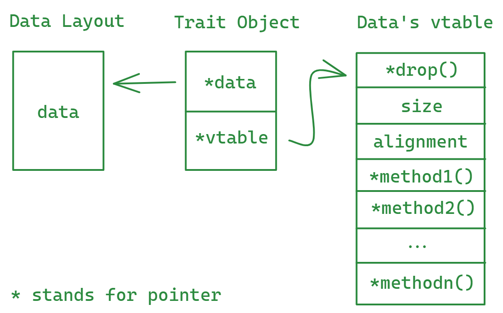

静态和动态分派
多态（polymorphism）这个概念相信各位编程狗都不陌生。当涉及多态调用时，需要有一种分派（dispatch）机制来确定实际运行哪个特定的实现（方法或函数）。分派机制有两种：编译时的静态分派（static dispatch）和运行时的动态分派（dynamic dispatch）。本文主要讨论这两种分派机制。
按照国际惯例，本文给出的大部分例子都是可以通过点击代码块右上角的右三角▶运行的。
静态分派
Rust的静态分派是通过编译期的单态化（monomorphization）来实现的， 请看下面例子：
// 我们定义一个简单的`Show`特性
// 然后分别为`u8`和`&str`实现`Show`特性
trait Show {
fn show(&self);
}
impl Show for u8 {
fn show(&self) {
print!("{}", self);
}
}
impl Show for &str {
fn show(&self) {
print!("{}", self);
}
}
// 我们定义一个简单的`Show`特性 // 然后分别为`u8`和`&str`实现`Show`特性 trait Show { fn show(&self); } impl Show for u8 { fn show(&self) { print!("{}", self); } } impl Show for &str { fn show(&self) { print!("{}", self); } } // 注意参数x的类型是一个可以在编译期确定的类型`T` fn show<T: Show>(x: T) { x.show(); } fn main() { let x = "Hello "; let y = 42u8; show(x); show(y); }
在上面的例子中，编译器会在编译期分别为u8和&str创建特化的show()函数，相当于生成了如下单态化的代码：
// 我们定义一个简单的`Show`特性 // 然后分别为`u8`和`&str`实现`Show`特性 trait Show { fn show(&self); } impl Show for u8 { fn show(&self) { print!("{}", self); } } impl Show for &str { fn show(&self) { print!("{}", self); } } fn show_str(x: &str) { x.show() } fn show_u8(x: u8) { x.show() } fn main() { let x = "Hello "; let y = 42u8; show_str(x); show_u8(y); }
单态化的优点是可以内联函数调用，实现运行时的高性能，但同时也导致了代码膨胀和编译时间的增加，这也是Rust编译速度为什么如此nice的原因之一（编译速度目前应该还没有能打的...）。
动态分派
Rust的动态分派功能是通过trait对象trait object（如Box<dyn Show>或&dyn Show）提供的。trait对象可以储存实现了该特性的的任意类型的值，但精确的类型只能在运行时才能确定。
回到上面的例子，我们也可以用trait对象来实现运行时的动态调度：
// 我们定义一个简单的`Show`特性 // 然后分别为`u8`和`&str`实现`Show`特性 trait Show { fn show(&self); } impl Show for u8 { fn show(&self) { print!("{}", self); } } impl Show for &str { fn show(&self) { print!("{}", self); } } // 注意参数x的类型是一个`trait object`的引用，`dyn`的意思是需在运行时动态确定的 fn show(x: &dyn Show) { x.show(); } fn main() { let x = "Hello "; let y = 42u8; show(&x as &dyn Show); show(&y as &dyn Show); // 或者更简单的写法： // show(&x); // show(&y); }
使用trait对象的函数不会在编译期被单态化，而是通过在运行时调用较慢的虚函数来实现动态分派，这样的好处是有效地抑制了进行内联和相关优化的机会。读到这里大家应该都明白为什么大部分Rust代码都是用静态分派的，不明白的可以借此机会好好思考一下。
你可以已经注意到，在上面动态分派的例子中，trait对象在传给函数的时候是以引用的形式传入的，这是因为trait对象大小是不确定的, 不能直接传入函数，因此加了一层indirection。&dyn Show是一个16个字节大小的胖指针（fat pointer）, 前8个字节指向具体类型携带的数据，而后8个字节指向该具体类型对应的vtable。以下是&dyn Show的vtable的表示：
#![allow(unused)] fn main() { struct ShowVtable { // 指向析构器的指针, 如果实现了`Drop`特性 destructor: fn(*mut ()), // 数据的大小 size: usize, // 数据的对齐要求 align: usize, // 具体实现的函数指针 // 可能有多个，我们的`Show`特性只有一个方法 show: fn(*const ()), } }
